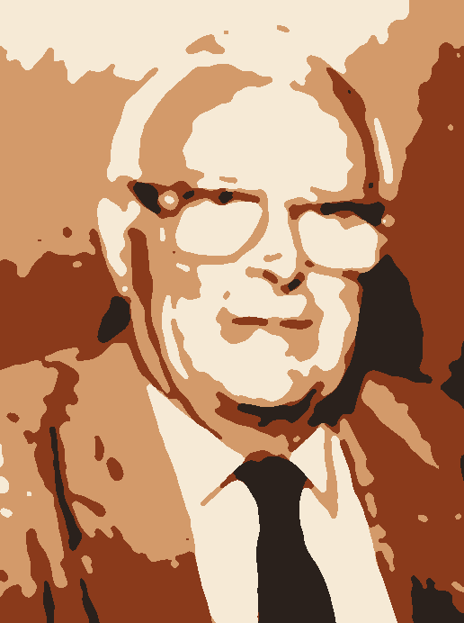

Tesis de Licenciatura
La tesis es una materia obligatoria de grado que tiene como meta principal iniciarte en la investigación científica.
La tesis completa la formación mediante la adquisición de las bases conceptuales y metodológicas de la investigación: búsqueda bibliográfica, uso de distintas metodologías de trabajo, diseño experimental, análisis de datos, proposición de modelos explicativos y la correcta redacción, preparación y exposición del trabajo científico.
El/la tesista es un/a estudiante de grado que se inicia en la investigación compartiendo alguna línea de trabajo del laboratorio que lo/la admite. No es, ni debe ser considerado/a, un/a técnico/a, docente ni auxiliar del laboratorio.
Pasoa paso
Aprobá los trabajos prácticos del ciclo obligatorio
Es el requisito para empezar oficialmente la tesis. Al presentar el plan se adjunta la libreta universitaria o el certificado analítico.
Elegí director/a y lugar de trabajo
Uno o dos directores. Al menos uno tiene que ser docente de la FCEN-UBA con título máximo.
Presentá el plan de tesis
Con la solicitud de inscripción firmada por director/es y tutor/a. Usá el modelo de carta para presentar el plan de tesis.
La Comisión de Carrera evalúa el plan
Puede consultar a especialistas o pedir revisiones.
Desarrollá la investigación
Mínimo cuatro meses desde la aprobación del plan; idealmente, no más de un año.
Entregá la tesis escrita
Tres copias, con el formato de una contribución científica. La Comisión designa al jurado.
Evaluación del jurado
Hasta 30 días corridos para dictaminar si se puede defender o si requiere correcciones.
Defensa oral y pública
Con la calificación final, de hasta 10 (diez).
Reglamentode tesis (2011)
Resumen de los artículos del reglamento vigente. Ante cualquier duda, vale el texto completo.
Sobre el o los directores
- La Tesis de Licenciatura podrá tener uno o dos Directores.
- Podrán ser Directores los docentes (Profesor o Docente Auxiliar con título máximo) de los Departamentos de Biodiversidad y Biología Experimental; Ciencias Geológicas; Ecología, Genética y Evolución; y Fisiología, Biología Molecular y Celular, FCEN-UBA. También podrán serlo investigadores de la FCEN-UBA o de otras instituciones con título máximo (Doctor o equivalente), quienes serán evaluados sin excepción por la Comisión de Carrera. Si hay un único Director, deberá ser docente de la FCEN-UBA; si hay dos, al menos uno deberá serlo.
- El/los Director/es será/n responsable/s de garantizar la financiación de las actividades de investigación que demande la tesis.
Requisitos para iniciar la tesis
- Los alumnos estarán en condiciones de comenzar oficialmente su Tesis cuando hayan aprobado los trabajos prácticos de todas las materias del Ciclo Obligatorio.
- El estudiante presentará una solicitud de inscripción ante la Comisión de Carrera, firmada por el/los Director/es y por el Tutor de su Plan de Estudios (si es otra persona), con el lugar de trabajo propuesto (que deberá coincidir con el de al menos uno de los directores) y el Plan de Tesis. Se adjuntará el CV del Director que no sea docente de la FCEN-UBA y, si la tesis no se desarrolla en la FCEN-UBA, la autorización del responsable de la unidad.
Desarrollo de la tesis
- El Plan de Tesis incluirá: título; introducción (antecedentes, hipótesis y objetivos); materiales y métodos; aporte de la investigación; facilidades disponibles (lugar, equipos, financiamiento); referencias bibliográficas; y firmas del/los Director/es.
- La Comisión de Carrera evaluará el plan propuesto, y podrá consultar a un especialista. Si lo considera deficiente o inapropiado, pedirá su revisión.
Duración
- La tesis no podrá durar menos de cuatro meses desde la aprobación del plan. Aunque no hay un límite preciso, se considera que debería desarrollarse en no más de un año.
Presentación
- La tesis se presenta por escrito (3 copias) con el estilo de una contribución científica, firmada por el alumno y el/los Director/es.
- Esquema orientativo: portada (Universidad, Facultad, título, autor, director/es, lugar de trabajo, mes y año, aclarando que es una Tesis de Licenciatura en Paleontología); resumen; introducción; materiales y métodos; resultados; discusión y/o conclusiones; referencias bibliográficas completas en orden alfabético.
Jurados
- La Comisión de Carrera designará tres jurados titulares y al menos dos suplentes, competentes en el área temática. Al menos uno de los tres jurados deberá ser Profesor de alguno de los Departamentos de la FCEN-UBA mencionados.
- Los jurados serán notificados por escrito y deberán aceptar la designación por escrito. Podrán ser reemplazados por los suplentes en caso de recusación, excusación, renuncia u otros impedimentos.
- El jurado evaluará la tesis en 30 días corridos y dictaminará si está en condiciones de ser defendida o si debe corregirse. En ese caso fijará un plazo, y luego tendrá 15 días corridos para evaluar la versión corregida. Si tras la segunda revisión no está en condiciones, la tesis será rechazada y deberá iniciarse una nueva en otra temática.
- Antes de la defensa se entregan dos ejemplares impresos de la versión definitiva y una copia digital para la Biblioteca Central de la FCEN-UBA y la Biblioteca Hildebranda Castellaro del Área de Paleontología.
Exposición
- La presentación será oral y pública, y la Comisión de Carrera le dará amplia difusión. El acta deberá estar firmada por al menos un jurado que sea profesor de la FCEN-UBA, con una calificación numérica de hasta 10 (diez).
- El día de la defensa deberá asistir al menos uno de los Directores, preferentemente el de la FCEN-UBA, quien presentará al estudiante.
PremioCamacho
El Premio Camacho distingue a la mejor Tesis de Licenciatura en Paleontología. Las condiciones y el procedimiento de selección están en su reglamento.

Tesis defendidas
Hasta hoy se recibieron alrededor de 74 licenciados/as en Paleontología, con tesis sobre una gran diversidad de temas: paleontología de invertebrados y de vertebrados, micropaleontología y paleobotánica, y también reconstrucción paleoambiental y paleoclimática, icnología, tafonomía, paleohistología y paleoneurología.